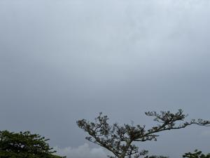

うるがいの話 ある日
最新: 恩師【うるがいの話 ある日】とは 一日だけのプログです
『うるがいの話』の最新一日だけのプログで、通信料が少なく経済的だ。カニの画像をクリックすると全ての日付が載る『うるがいの話』サイトを表示します
|
|
【うるがいの話】 うるがい(ｳﾙｶﾞｲ urugai)とは、『もずくがに』の名前でとても大きくなります。 |
|---|---|
|
|
【カミマヤーの話】 猫のことを方言でマヤーといいます。カミマヤー（kamimayaa）とは、神の猫のことです。 |
|
【たながぁの音楽】 たながぁ（ﾀﾅｶﾞｰ tanagaa）とは手長えびのことで、何種類かあり大きいのは車 エビぐらいになります。 |

|
【ぶながぁの話】 ぶながぁ(ﾌﾞﾅｶﾞｰ bunagaa)とは、赤い髪の毛、赤い身体、そして身長は１ｍ２０ｃｍ ぐらい、川の蟹を食べているの目撃された。場所は沖縄県国頭郡大宜味村のと ある村僕の隣近所に住んでいる爺さんから、聞いた話です。 |
|
|
【ギーマの話】 ギーマ(giima)とは、山原の里山に咲くスズランに似た、 花を付けます。実は食べられます、 気が付くと口の周りが紫になっています。 |
2026年05月23日 (土）恩師
15:09

人生の扉開いてくれた恩師 ７９歳
恩師のＯＷさんが９２歳で天に召された。ＯＷさんは私の人生の
扉を開いてくれた。
２８歳の時、ＯＷさんと出会った。ＢＡＮＫのコンピューター導
入で東京のソフトウエア会社から派遣されたのがきっかけである。
コンピューター導入を総括していたのが課長のＯＷさんだった。
システム開発やプロジェクト管理の経験がない素人集団を引っ張
り、勤勉に勤勉を重ねてシステム開発に挑んだ。
半年後、私はＢＡＮＫの職員となった。高学歴の方が多い組織に
なじめるか不安だったが、ＯＷさんの誘いで転職した。ＯＷさん
は部長、役員となっても私を気遣ってくれた。
ＯＷさんは英語が堪能で物事を論理的に思考する聡明な方だった。
私もＯＷさんから授かった宝物を胸に現役で頑張っています。
タッちゃんさんの新聞の投稿の一部です。なるほど、そういう事
だったんですね。私は、ＯＷさんが部長の時に関わりました。『
メモリのサイズの根拠を説明して』と言われ、社会人２年生の私
に、難しい宿題をだしました。回答は、前提知識がない一般の人
に説明するには内容が難しく（私も分からなかった）上司とも相
談の上、回答は困難ですと諦めてもらいました。私も会社の英語
クラブに入らないかと誘われ、やんわりと断りました。
ＯＷさんはお義母さんより、少し年下だったんですね。タッちゃ
んさんは半年後に会社を転職したんですか、私は２５年で転職し
ました。タッちゃんさん、８０歳手前です写真は恐ろしく若い。